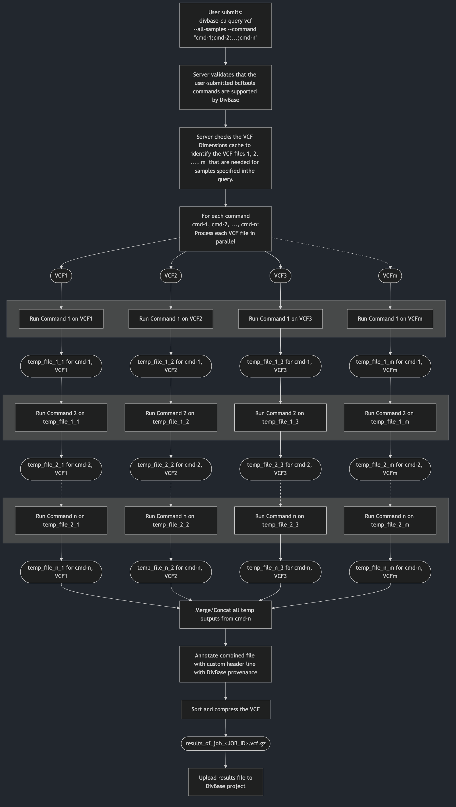

DivBase VCF query syntax¶
Users can checkout subsets of their VCF data from their DivBase project using the command
divbase-cli query vcf
This data checkout is run as an asynchronous job that is sent to the queue on the DivBase server, and eventually run once there are idle resources to process the job. Users will get a job ID when they submit their query to the task queue, and can view the status of the job with the task-history commands, such as:
divbase-cli task-history id <JOB_ID>
The processing of the VCF files on the DivBase server is done with bcftools. DivBase will detect the VCF files in the project's data store that are needed for the query; if more than one VCF file is needed, DivBase will ensure that the files are compatible with each other according to the requirements of bcftools and ensure that a single results file with the subset data is returned to the user by running bcftools merge and bcftools concat on the intermediate files as needed. The result is a single VCF file that is uploaded to the projects data store and named after the job ID.
Users can query the VCF data in their project with or without combining it with a sample metadata query.
Example of a VCF query that identifies the samples and VCF files to filter on in the project's datastore and then applies a subset based on genomic range:
divbase-cli query vcf --tsv-filter "Area:North,West;Weight:>10" --command "view -r 21:15000000-25000000"
# This will return the job ID of the submitted job. Example:
# Job submitted successfully with task id: 123
# Job status can be viewed with e.g.
divbase-cli task-history id 123
The outcome of a DivBase VCF query is a single results file with merged/concatenated data that fulfills all user-defined filters.
Note
When you submit a query, DivBase will use the state of the VCF Dimensions and the VCF files at that very point in time to produce the query results. It is therefore fine if you or another project member uploads new VCF files to the project while a query is queued or running.
1. Prerequisites¶
Ensure that the files of the DivBase project are prepared according to the instructions in Running Queries Overview - Prerequisites. In short, this means that the VCF files and sample metadata TSVs are formatted according to DivBase requirements and have been uploaded to the DivBase project's data storage, and that VCF dimensions cache is up-to-date. The latter can be ensured by running the following (and wait for the task to be completed) before submitting any VCF queries:
divbase-cli dimensions update
DivBase uses bcftools to subset VCF data. The DivBase VCF query syntax is based on bcftools view as described in the bcftools manual. If you are not familiar with bcftools view, you might want to take some time to study the different options. The commands used for DivBase VCF queries are described in more detail in the Writing the bcftools command argument section below.
2. divbase-cli query vcf command structure¶
divbase-cli query vcf \
[--tsv-filter "<FILTER>"] \
[--samples "<ID1,ID2,...>"] \
[--samples-file path/to/samples.txt] \
[--all-samples] \
--command "<BCFTOOLS_VIEW_PIPE>" \
[--metadata-tsv-name <FILENAME.tsv>] \
[--project <PROJECT_NAME>]
- Required:
--command - Required: exactly one sample-selection mode (
--tsv-filterOR--samplesOR--samples-fileOR--all-samples) - Optional:
--metadata-tsv-name(mainly needed with--tsv-filter) - Optional:
--projectif user config default exists
The --tsv-filter, --samples, --samples-file, and --all-samples are mutually exclusive since they are alternative ways to control which samples to query on.
3. Sample and VCF file selection¶
To run a VCF data query, the user needs to input the samples to perform the query on, as well as the bcftools view command(s) (described in Writing the bcftools command argument) below. DivBase will use the VCF Dimensions cache to find the VCF files that these sample are found in, and process only those VCF files. The user thus never should input any VCF filenames in their queries.
DivBase supports different ways to input the samples. At least one of the following, mutually exclusive, sample-selecting options must be used in a VCF query:
--tsv-filter, --samples, --samples-file, or --all-samples
These are explained in the subsections below.
3.1. Metadata-driven sample and VCF file selection (--tsv-filter)¶
This is a combined sample metadata and VCF data query, that allows users to let the results of the metadata query (samples and VCF files) be automatically used for a VCF data query. The VCF queries in DivBase was designed with this in mind, since it augments regular bcftools subsetting with metadata-guides filtering.
The metadata query is input with --tsv-filter argument and uses the TSV format and filter syntax described in the guide on sample metadata queries. They system will by default look for sample_metadata.tsv in the project's data storage, but this can be overridden to use another TSV in the data storage using --metadata-tsv-name <MY_SAMPLE_METADATA.TSV>.
divbase-cli query vcf --tsv-filter "Area:North,West;Weight:>10" --command "view -r 21:15000000-25000000"
For example, the system might find that the samples that fulfill the sample metadata query set with --tsv-filter are, say, S2, S5, S28, S108 and that they are described in the files file1.vcf.gz, file3.vcf.gz, file4.vcf.gz. The DivBase server will then act on only these three files and subset based on the four samples.
Tip
Before using --tsv-filter in query vcf, you can do a dry-run of metadata query to ensure that the metadata query returns the expected samples and VCF files:
divbase-cli query tsv "Area:North,West;Weight:>10"
3.2. Sample selection from direct input (--samples)¶
Users can also run VCF data query without metadata queries by defining which samples and/of VCF files to subset on. To get an overview of the VCF files and samples in the project, ensure that the VCF dimensions cache is up-to-date and run the following:
divbase-cli dimensions show
To just get all samples that are available for a project, use
divbase-cli dimensions show --unique-samples
To specify the samples on the command line, use the option --samples:
divbase-cli query vcf --samples "S1,S2,S10,S239" --command "view -r 21:15000000-25000000"
As long as the samples are present in the DivBase project, the server will automatically find out the VCF files it needs to process for the VCF query, by reading the VCF dimensions cache.
3.3. Sample selection from file (--samples-file)¶
An alternative to --samples for non-metadata driven VCF queries is to provide a plain UTF-8 text file with all sample IDs to use in the query. This is convenient when you have many samples. For example:
divbase-cli query vcf --samples-file samples_for_my_query.txt --command "view -r 21:15000000-25000000"
Format rules for --samples-file:
Allowed:
- One sample ID per non-empty line
- Blank lines (will be ignored)
- Comment lines starting with
#
Not allowed:
- Multiple sample IDs on one line separated by delimiters such as
,,;, tab, or| - Header-like lines (for example
Sample_ID) are not recommended and are treated as literal sample IDs unless the line starts with#
Valid example:
# samples_for_my_query.txt
# this line is a comment
S1
S2
S10
S239
Invalid example:
S1,S2,S3
S4;S5
If invalid delimiters are found, divbase-cli exits early with a format error before submitting the API request.
3.4. Explicit all-samples selection (--all-samples)¶
It is possible to use all samples in a DivBase project for a query, with some constraints. To select all samples, use the explict option --all-samples:
divbase-cli query vcf --all-samples --command "view -r 21:15000000-25000000"
To avoid accidental full-project runs, --all-samples requires at least one supported bcftools view option in --command other than -s/--samples. This is to avoid creating queries that take all samples and variant data from all VCF files in the project without subsetting them. For that case it would be more efficient to download the dataset from the project instead with:
divbase-cli files download-all
and then merge them manually to a single file, or so desired.
4. Writing the bcftools command argument¶
Filtering and subsetting on the VCF data itself if done with the --command argument. It uses the syntax of bcftools view since that it is the computational tool that performs the VCF data processing on the DivBase server.
Several commands can be piped together by separating them by semicolons, similar to how UNIX pipes are commonly used to stream data between multiple bcftools commands.
Example of piped commands in DivBase VCF queries:
divbase-cli query vcf --samples "S1,S2" --command "view -r 21:15000000-25000000; view -g hom; view -i 'MAF>=0.05'"
The DivBase will apply the command(s) specified in --command in turn to a copy of each VCF file included in the query, and finally merge and/concatenate them in to a single results file. This means that the user should not state merge or concat in their commands.
Note
The bcftools view manual has the following recommendation:
Also note that one must be careful when sample subsetting and filtering is performed in a single command because the order of internal operations can influence the result. For example, the -i/-e filtering is performed before sample removal, but the -P filtering is performed after, and some are inherently ambiguous, for example allele counts can be taken from the INFO column when present but calculated on the fly when absent. Therefore it is strongly recommended to spell out the required order explicitly by separating such commands into two steps. (Make sure to use the -O u option when piping!)
In DivBase, this would translate to separating several view commands with semicolons, e.g. "view -r 21:15000000-25000000; view -g hom; view -i 'MAF>=0.05'"
4.1. Automatic handling of samples and VCF file names¶
Samples and filenames are automatically handled by the DivBase server based on the user input discussed in Sample and VCF file selection above.
If there is more one command specified by the user in the --command string, the sample filtering command view -s <SAMPLES_FROM_USER_OR_METADATA_QUERY will be automatically appended by the DivBase server to the first command in the user-defined pipe. This means that the user only need to explicitly include view -s in the --command straing when that is the only bcftools filtering command in their query.
For example, a command like
divbase-cli query vcf --samples "S1,S2" --command "view -r 21:15000000-25000000"
Will be interpreted by the DivBase server as:
bcftools view -s S1,S2 -r 21:15000000-25000000
By default, DivBase injects sample subsetting (view -s) into the first view command.
If you want to control where sample subsetting happens in the pipe, explicitly include view -s in your --command string. For example:
divbase-cli query vcf --samples "S1,S2" --command "view -r 21:15000000-25000000; view -s"
In this case, DivBase applies view -r first, then injects the resolved samples at view -s step, and finally merges/concatenates intermediate results into one output file. (See 5.3. How does DivBase process the VCF files? below for technical details on how DivBase processes semicolon seprated bcftools view commands.)
Important
Do not provide sample names in the --command string!
For example, these will return an error: view -s S1,S2 or view --samples=S1,S2.
This is because Sample IDs must be provided to divbase-cli query vcf via the --samples, --samples-file, or --tsv-filter options, as discussed in Sample and VCF file selection .
4.2. bcftools view commands not supported by DivBase¶
The --command argument will accept many, but not all possible bcftools view options. In short, commands that affect bcftools I/O settings, and filter input from file cannot be used with DivBase as the system handles this internally already.
The following view subcommands are not supported in DivBase:
bcftools view subcommand |
Reason why it is not allowed in DivBase |
|---|---|
| -h, --header-only | Instead use: divbase-cli files stream <file.vcf.gz> \| zcat \| awk '/^##/ \|\| /^#CHROM/ {print} !/^#/ {exit}' |
| -l, --compression-level | Handled by the DivBase server |
| -O, --output-type | Handled by the DivBase server |
| -o, --output FILE | Handled by the DivBase server |
| -R, --regions-file file | External filter files not supported |
| -T, --targets-file file | External filter files not supported |
| --threads INT | Handled by the DivBase server |
| --verbosity INT | Handled by the DivBase server |
| -W[FMT], -W[=FMT], --write-index[=FMT] | Handled by the DivBase server |
| -S, --samples-file FILE | Covered by divbase-cli query vcf --samples-file |
| -s LIST, --samples LIST, --samples=LIST | Sample IDs must be provided via --samples or --samples-file (placeholder view -s without sample names is allowed) |
- (bcftools stdin input operator) |
Piping of consequtive bcftools commands is handled by the DivBase server |
| -f, --apply-filters LIST | Not supported in DivBase queries |
The DivBase server will check if these are included in the --command string before the query job is sent to the job queue. If any of the unsupported bcftools view options are included in the string, the job will not be enqued and an error message will be returned to the user.
Note
Example of a --command with two DivBase-unsupported bcftools view options, and the resulting error message:
divbase-cli query vcf --command "view -r chr2:1-10000; view -T; view -W"
# Details: Unsupported bcftools view option(s) found in '--command':
# • Pipe segment 2, token '-T': Option '-T/--targets-file' is not supported in DivBase queries because external filter files are not supported.
# • Pipe segment 3, token '-W': Option '-W/--write-index' is handled by the DivBase server.
4.3. Special considerations¶
4.3.1. Semicolons inside FILTER expressions¶
As described above in e.g. Section 4, users can create pipes of several bcftools commands by delimiting them with a semicolon (;). However, a few bcftools commands can possibly contain semicolons as part of a value. One example is bcftools view -i filter expressions, such as bcftools view -i FILTER="q10;s50". If you want to use this for DivBase queries, you will need to ensure that the inner double quotes are escaped in the --command string so the expression is preserved correctly through CLI/API parsing.
Example with escaped inner double quotes:
divbase-cli query vcf \
--all-samples \
--command "view -i 'FILTER=\"q10;s50\"'; view -r 20:1-2000000"
Failing to not escape the inner double quotes might lead to the string given by --command being altered befored it reaches the bcftools layer of DivBase, and can thus lead to incorrect results or errors in the query.
5. What happens after submitting a VCF query? (Job lifecycle and outputs)¶
5.1. What the user can see after submitting the job¶
- CLI returns
Job submitted successfully with task id: <ID> - User monitors status via task-history commands
divbase-cli task-history - On job success, DivBase uploads a result VCF file to project's data storage. If the job fails, user can read the error message in the task-history.
- User can list/download result files from the project's data storage.
Suggested commands:
divbase-cli task-history id <TASK_ID>
divbase-cli files ls --project <PROJECT_NAME> --include-results-files
See also the manual for bcftools view bcftools manual.
5.2. How VCF queries affect files in your project¶
- Source VCF files: uploaded by project members to the DivBase project. Read, but not modified by the query jobs. Source VCF files are indexed in the VCF dimensions cache of the project.
- Sidecar metadata TSV: read-only during queries.
- Result VCF files: new files created on successful jobs. Are never considered towards the VCF dimensions cache or subsequent VCF queries. Will be named
result_of_job_<JOB_ID>. As an extra layer of provenence in case the file name of the results file is change, a the following is also added to the file header usingbcftools annotate:##DivBase_created="This is a results file created by a DivBase query; Date=<TIME_STAMP>"
Note
- Re-running queries creates identical jobs and new result files. The system does not have any limitations for duplicate queries, so please be mindful of this.
- Result files are outputs, not treated as new source data for future dimensions/indexing workflows
- Keep bucket tidy by deleting obsolete result files if needed, they will take up space
TODO describe cron job for old results files
5.3. How does DivBase process the VCF files?¶
This section is aimed towards the technical user that would like to understand how DivBase uses bcftools to process VCF data queries on the files in a project's data storage.
Figure 1 below shows a schematic overview of how DivBase processes VCF queries for the general case of n user-defined bcftools view commands in --comands and m VCF files needed for the given query.

Figure 1. Schematic overview how the DivBase server will process n bcftools view commands for samples that found in m VCF files. The processing occurs in stages per command, meaning that each command n is applied to each VCF file before moving on to the next stage where the next command n+1 is applied. Legend: Rounded shapes: VCF files; squares: process steps; gray boxes: stages of the command processing (each command is processed for all VCF files before processing to the next stage).
To give an example, let's say that this CLI command was submitted by a user to their project:
divbase-cli query vcf --samples "S1,S2" --command "view -r 21:15000000-25000000; view -s"
Let's assume that the server identified that two VCF files file1.vcf.gz and file2.vcf.gz are needed to query the two samples S1 and S2. The DivBase server then interpret this information to dynamically create a small script, that in this case would look something like this:
# Process each input file with the first command:
bcftools view -r 21:15000000-25000000 file1.vcf.gz -Ou temp_1_1.bcf
bcftools view -r 21:15000000-25000000 file2.vcf.gz -Ou temp_1_2.bcf
# Process each temp file with the second command:
bcftools view -s S1,S2 temp_2_1.bcf -Ou temp_2_1.bcf
bcftools view -s S1,S2 temp_2_2.bcf -Ou temp_2_2.bcf
# Assume that the files have no overlapping sample sets, i.e. can be merged (this check happens before the job starts)
bcftools merge temp_2_1.bcf temp_2_2.bcf result_of_job_<JOB_ID>.vcf.gz
6. Examples¶
Below are a few example of VCF queries. For all these examples, DivBase determines which files (e.g. file1.vcf.gz, file2.vcf.gz) that contain matching records and processes only those files.
6.1 Region-only query across all samples¶
divbase-cli query vcf --all-samples --command "view -r 1:1000-2000"
Result VCF file will contain all samples in the project and variants in region 1:1000-2000.
6.2 Combined metadata + VCF query¶
divbase-cli query vcf --tsv-filter "Area:North;Sex:F" --metadata-tsv-name sample_metadata.tsv --command "view -r 2:50000-90000"
Result VCF file will contain samples matching metadata filter (Area:North AND Sex:F) and variants in region 2:50000-90000.
6.3 Direct sample list query¶
divbase-cli query vcf --samples "S1,S2,S10" --command "view -r 3:1-500000"
Result VCF file will contain samples S1, S2, S10 and variants from region 3:1-500000.
6.4 Multi-step command with semicolon-separated pipeline stages¶
divbase-cli query vcf --samples "S1,S2" --command "view -r 21:15000000-25000000; view -g hom; view -i 'QUAL>=30'"
Result VCF file will contain samples S1,S2. The input VCF files needed for this query are first subset by region, then by genotype class (-g hom), then by quality filter (QUAL>=30).
7. Common errors and how to fix them¶
| Error | Likely cause | Suggested fix |
|---|---|---|
Use only one of --tsv-filter, --samples, --samples-file, or --all-samples |
More than one sample-selection mode was provided in the same query. | Use exactly one of: --tsv-filter, --samples, --samples-file, or --all-samples. |
Unknown sample IDs / were not found in the project's dimensions index |
One or more sample IDs are not present in current VCF dimensions cache. | Run divbase-cli dimensions show --unique-samples to verify names. If needed, update cache with divbase-cli dimensions update --project <project>. |
Invalid --samples-file format (warnings/errors about delimiters or only one parsed sample) |
The samples file has comma/semicolon/tab/pipe-separated values, header-like rows, or malformed lines. | Use plain UTF-8 text with one sample ID per line. Keep comments as lines starting with #. |
Dimensions not up to date |
Bucket contents changed since dimensions were last indexed. | Run divbase-cli dimensions update --project <project> and retry the query. |
Unsupported bcftools command ... |
--command used a command other than view (for example merge). |
Use only bcftools view syntax in --command. |
Unsupported bcftools view option(s) found in '--command' |
--command contains DivBase-blocked options such as -O, -o, -R, -T, -W, -S, --threads, --verbosity, -f. |
Remove blocked options and keep only supported view options. |
Do not provide sample names in '--command' via '-s/--samples' |
Sample IDs were provided inside --command (for example view -s S1,S2 or view --samples=S1,S2). |
Provide sample IDs via --samples, --samples-file, or --tsv-filter. Use placeholder view -s if you want to control where sample subsetting happens in the pipe. |
Do not provide VCF/BCF input filenames in '--command' |
A filename-like token was included in --command (for example view file.vcf.gz, view -r file.vcf.gz, view sample.bcf). |
Remove input filenames from --command. DivBase resolves input files from project dimensions automatically. |
Do not use stdin '-' in '--command' |
Stdin input (-) was used in --command (for example view - or view -r chr1:1-1000 -). |
Remove stdin token - from --command. DivBase resolves input files from project dimensions automatically. |
Duplicate bcftools command segment(s) found in '--command' |
The same command segment was repeated in a semicolon-separated pipe. | Remove duplicated segments (for example avoid view -r 1:1-100; view -r 1:1-100). |
--command contains empty strings / The --command option must be a non-empty bcftools view string |
Empty command string or empty ; segments were submitted (for example "", ";", "view -r 1:1-100;;view -g hom"). |
Provide a non-empty command. If you only want sample-based subsetting, use --command "view -s". |
When using all-samples mode, --command must include at least one supported bcftools view option other than '-s/--samples' |
--all-samples was used with no effective subsetting/filtering beyond sample placeholder. |
In --all-samples mode include at least one supported non-sample view option, for example -r, -t, -i, -e, -g, -q, -Q, -v, -V. |
See also: